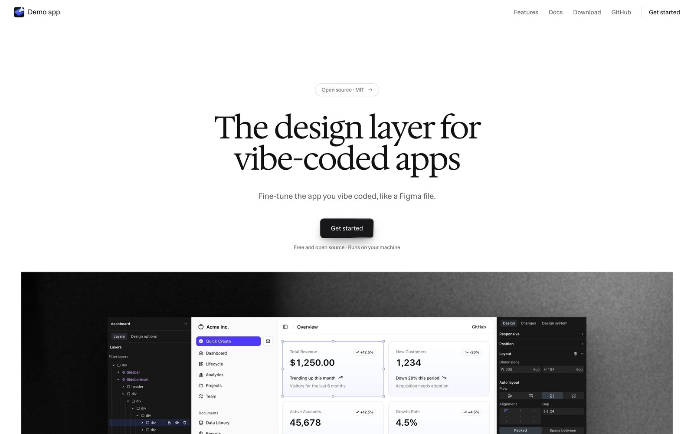

← Round 5: fine-tune what you vibe coded · Round 7: One move, with sound →
Round 6: the landing page's story, told like Apple
Five options with your script in the same order: edit the copy, measure and space it, a radius token, a note to the agent, the agent's hover, the canvas. Every one opens with a new intro. Every one keeps M's first 15 seconds, where each piece lifts off the page while you tune it. After that there are no more layers: each step gets its own close-up and its own camera move. The words come from the landing page. The cuts are silent.

Option P
Landing
The landing page in motion. It opens the way the page does: the hero line, and under it the app, the editor's panels and its toolbar floating apart in a 3/4 view. They land one after another into the real editor, with a soft light marking the toolbar's click. M's first act follows. Then the page's section headings frame each step, with the window beside them. The token gets an orbit, the note a crane down to the button, Send a whip pan, and the agent's hover a slow push to macro. The canvas is a pull-back to the board, and the cut ends on the page's end card.
- Length
- 35.9 s
- Opening
- The landing hero: three planes land into the editor
- After 15 s
- Two-tone section headings beside the window; orbit, crane, whip, macro push, pull-back
Option Q
Keynote
Apple's keynote manner: a black stage, one idea per shot, the key object always centered. An object carries every scene into the next, so there are no cuts. “You vibe coded it. Now design it.” gets Design Layer's own selection, and the box grows into the editor's window. After M's act, the hero's selection flies off the page onto “Tokens.” and then shrinks onto the button. The token chip flies from the picker to the button, and the note's pin flies into Send to agent. For the agent's hover, the button is lifted out alone onto black, big and centered, with its light running around it. Then it goes back into the page, and the page goes into its frame on the board.
- Length
- 37.9 s
- Opening
- A two-tone line; its selection box becomes the window
- After 15 s
- Objects carry each scene: selection, chip, pin, the button alone on black
Option R
Steps
The combination you asked for: M's first act, then O's big step words with close-ups, each with a different camera move. It opens on a coding agent's prompt: “Build a landing page for my app.” Enter, and the prompt grows into the window with the app inside. “You vibe coded it. Now fine-tune it.” Then the editor's panels slide in. After the act, “Tokens.” wears a selection that rounds as the token lands, while the camera dollies into the picker. “Ask.” gets a pin and a crane down to the note, and “Send.” a whip pan. The agent's hover plays full frame with a slow push in, and “Every page.” pulls back to the board.
- Length
- 36.4 s
- Opening
- A prompt types, then grows into the vibe-coded app
- After 15 s
- O's step words: dolly, crane, whip, full-frame push, pull-back
Option S
Macro
Apple's product macros, applied to an interface: extreme close-ups, a thin plane of focus with the page soft around it, a pool of light falling off to black, slow drifts and rack focus. It opens drifting across the app's own headline. Focus racks along the line, then pulls back to reveal the editor. After M's act, every step is a macro. Focus racks from the token in the picker to the button's corner. Then the note is typed in close-up, Send is pressed in close-up, and the agent's hover gets an extreme close-up where the light runs along the edge. The canvas is one long macro-to-wide pull-back. Small two-tone supers carry the landing page's words.
- Length
- 36.9 s
- Opening
- A macro drift across the app's headline, then a rack focus and pull-back
- After 15 s
- Depth of field, rack focus, slow drifts; small supers
Option T
One move
The whole film is one unbroken camera move. It starts far out, with the editor as an exploded view and the hero line standing in the space. The camera flies through the line as the layers close up and land. From then on the window never stops moving: an orbit toward the inspector for the token, a crane down to the note, a rise with Send, a swing back to the button for the hover. Then it climbs away as the page becomes one frame on the board, which lies back like a landscape. The headings stand in the space beside the work, so the camera passes them like signs.
- Length
- 36.0 s
- Opening
- A fly-through from far out: an exploded editor and the hero line
- After 15 s
- No cuts at all: the window keeps moving in 3D; words stand in the space
What I took from Apple's videos
- One shot, one idea, with the key object centered and room to breathe. The stage stays dark and quiet so nothing competes with the product. (leomeethewoo, “Make your product videos look expensive”)
- Few colors, used the same way every time: near-black, white with a dim grey, Design Layer's indigo, and teal only for the agent.
- Eased, overlapping motion and no direct cuts. A selection, a chip, a pin or the camera itself carries each scene into the next.
- Rhythm that changes: a calm opening, brisk steps, a held hero shot for the agent's work, a sweeping canvas, a still end card.
- Two-tone lines in Apple's manner (“More personal. More powerful.”), which is also how the landing page sets its headings.